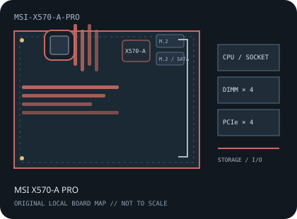

[ INDIVIDUAL COMPONENT // MOTHERBOARDS ]
MSI X570-A PRO
AMD Socket AM4 / AMD X570, ATX, 305 × 244 mm, 2019. This record identifies the exact model and revision scope below.

REVISION WARNING: Verify the full model name and PCB revision silkscreen before fitting a CPU, selecting memory, or applying firmware. Similar names and revisions may use different support files.
Specifications
| Catalog subcategory | AMD Socket platforms |
|---|---|
| Board / revision covered | MS-7C37 X570-A PRO; identify the PCB silkscreen and use the matching MS-7C37 manual and firmware. |
| Socket and chipset | AMD Socket AM4 / AMD X570 |
| Form factor | ATX, 305 × 244 mm |
| Memory | Four dual-channel DDR4 DIMM sockets, up to 128 GB; data rate and population depend on CPU and validated memory configuration. |
| CPU and BIOS support | MSI lists compatible Ryzen 5000, 3000 and selected 2000-series desktop processors/APUs for MS-7C37; each CPU may require a minimum BIOS. Verify the CPU list before updating. |
| Expansion | Two PCIe x16-length slots with CPU-dependent PCIe 4.0 lanes to the primary slot and up to x4 on the secondary, plus three PCIe x1 slots. |
| Storage | Two M.2 sockets (CPU/chipset-connected PCIe paths and model-specific SATA mode) plus six SATA 6 Gb/s ports; refer to MSI's manual for sharing and RAID limits. |
| Rear I/O and connectivity | Rear HDMI for compatible APU, USB Type-A and Type-C across USB 3.2 generations, PS/2 combo, Gigabit Ethernet, multi-channel analog audio and optical S/PDIF. |
Compatibility and revision notes
Ryzen 5000 and APU compatibility is BIOS-qualified. Keep X570-A PRO firmware distinct from other MSI X570 boards and use the exact CPU support table.
Socket, connector shape and chipset branding alone do not establish compatibility. Check the exact board revision, CPU support table, minimum BIOS, memory population rules, power connectors, case clearance and lane-sharing details in the cited documents.
Preservation and repair
Inspect the chipset fan, AM4 socket, M.2 thermal hardware and SATA connectors; use the Flash BIOS Button procedure documented for MS-7C37.
For archival preservation, record PCB revision, serial/date codes, installed firmware, known faults, repairs and test conditions. Use ESD-safe handling and do not power a board with loose conductive hardware beneath it.
Manufacturer sources
- MSI X570-A PRO specificationsOfficial MS-7C37 model specifications.
- MSI X570-A PRO manuals and downloadsManufacturer manual covering installation, layout and BIOS recovery.
- MSI X570-A PRO support and CPU/BIOS listCheck the exact processor and firmware requirement for MS-7C37.
Manufacturer specifications, manuals and support lists are authoritative for the physical board; use only revision-matched firmware.